Monday · May 4 · 9 AM ET
The Great Unsealing 2.0
Everybody Lies.
A Tale of 3 Trials.
Lively · Wilson · d4vd. Three courtrooms. One morning.

Ivonne Cruz with the cold open — exactly the energy we're walking into this week with. Press play, then we get to the docket.
@ivonnecruz2525
Tap to load TikTok
tap to play · @ivonnecruz2525
Lively · Wilson · d4vd. Three courtrooms. One morning.
Pre-trial drama & the Great Unsealing. Their lawyers were in a Manhattan courtroom Apr 28 for the final pre-trial conference — and the docket has been on fire ever since. We walk through what each side argued, what's now public, and what shapes the May 18 trial.
All the tea on the Blake trial straight from the Wayfarer attorney himself. The show is @mktruecrime, produced by our new favorite legal voice Phill Holloway. Clip below — long-form breakdown on the next slide.
@mktruecrime
Tap to load TikTok
Phill — who produces MK True Crime — sits down with Bryan Freedman to walk Blake's INSANE damages claim, then runs straight into d4vd's Amazon order and the “No Body” yacht murders. One sit-down · three trials.
via @PhillHolloway · YouTube · "Blake Lively's INSANE Damages Claim, w/ Bryan Freedman"
Wayfarer's PR is leaning on a courtroom stipulation as if it were a ruling. It's not. A stipulation is just an agreement between the parties to avoid arguing a point at trial — usually because both sides want to streamline what the jury hears.
What it isn't: a finding of fact. A judgment on the merits. A ruling against Lively. Or any kind of admission by her side.
What it is: a procedural shortcut. The "#notactuallygolden" tag is doing the heavy lifting here for a reason — the deep-dive thread breaks down what each side actually agreed to.
Inner City Press has the next courthouse date locked — a Daubert hearing on the admissibility of expert testimony before the May 18 trial. Damages experts, methodology challenges, the lot.
DocketUpdates will be in the courtroom for the Daubert hearing — CJ won't be there. Follow them for the play-by-play, exhibit rulings, and the Daubert/Kumho Tire calls on each expert.
Sales drop · the playbook responds. SoHo pop-up truck on Saturday May 2: free samples, full sizes, tote bags for the first 500. Wild Nectar Santal Nourishing Duo, Pre-Shampoo Mask, All-In-Wonder Leave-In Potion, Hair & Body Refresh Mood — all in the giveaway bag.
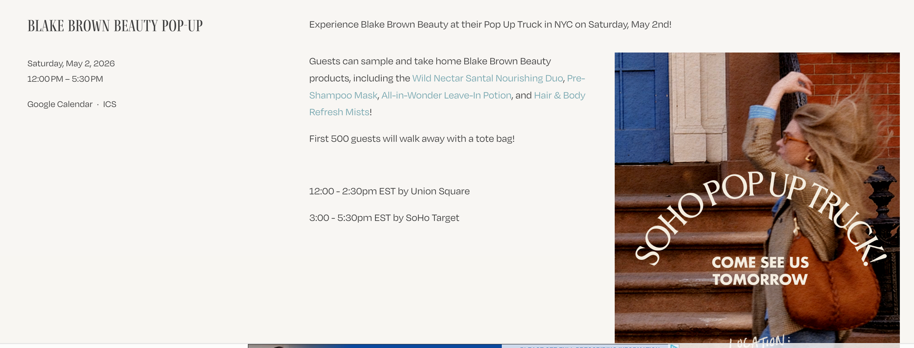
Filed to the case page · lively-v-baldoni.html
A list of documents is about to drop into the public docket. Crowdsourced index pinned by r/ItEndsWithLawsuits — bookmark before Thursday.
r/ItEndsWithLawsuits surfaced the unsealed Sony executive emails — internal correspondence corroborating that Ryan Reynolds was directly involved in the IEWU production decisions, contrary to public framing.
Read the Reddit thread →Per the unsealed materials surfaced on r/ItEndsWithLawsuits: Blake Lively's first cut of It Ends With Us was so poorly received internally that Sony intervened on the edit.
Read the Reddit thread →Two creators have been threading these timelines all weekend — the dailies dirty-delete saga and the lawyer-communications timeline. Watch back-to-back, the inconsistencies in Blake's deposition stop looking incidental.
@megannicolle87
Tap to load TikTok
@boccegohawks
Tap to load TikTok
Two weeks from today. Jury selection first, then opening arguments. We'll be tracking every filing between now and then on the docket.
Everything we covered this morning is filed on the docket — pleadings, sanctions, attorney profiles, every video referenced in Docket 959 (all 6 MSJ videos added). For more news, visit docketupdates.com.
Prelim got pushed to May 26 at defense request. The pre-prelim brief stayed unsealed despite Blair Berk's objections — and the contents are damning. Plus: he got the haircut, didn't get the suit.
Hours after TMZ ran with the request, the actual filings surfaced. Defense filed two pre-prelim motions — Judge Olmedo signed the haircut order on Apr 27 and crossed out the civilian-clothing one. Both docs below.


For a stretch we thought we'd lost the courtroom sketch. Wide-shot photography killed it. Then 2026 happened — d4vd's prelim, Mona Shafer Edwards's pastels, and a generation of Twitter/X mixing classical illustration with meme texture.
The brief Blair Berk fought to keep sealed. Olmedo refused. Now it's public — courthousenews has the full PDF. This is what the May 26 prelim will be built on.
Read it before the prelim. The motive section, the Amazon order list, the Lake Cachuma routes, the cell-tower placement. Everything Olmedo will hear in three weeks.
Open the prosecution brief (PDF) →DA frames it as a "blended case" — direct physical proof + strong inference. No eyewitnesses. No confession. Degraded forensics on critical pieces. Defense plays it as "purely circumstantial." Here's everything stacked.
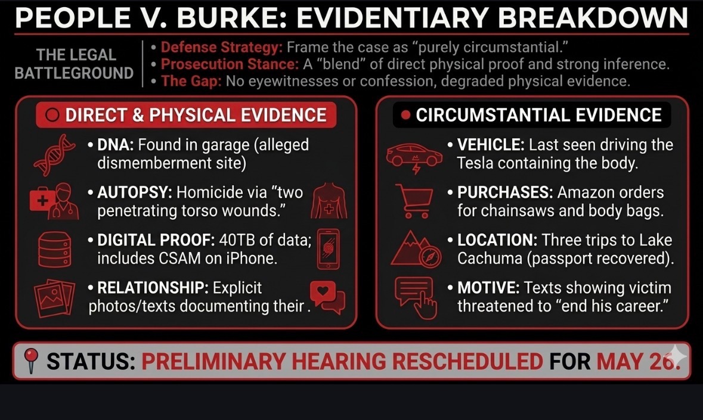
Three threads converging on the same room. The garage theory of where Celeste was kept and dismembered before her body was moved to the Tesla.
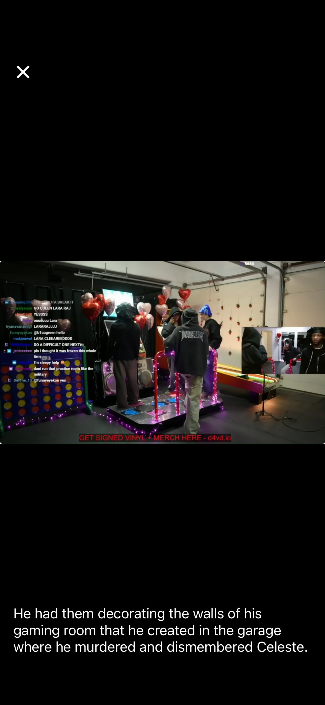
Per the prosecution brief: Burke ordered two chainsaws on Amazon. r/d4vdiots traced one of them — the one apparently left in the garage when he fled.
Mail surfaced from the West Hollywood residence — addressed to "Victoria Mendez," 13xx Doheny Pl. The same Doheny Pl property tied to Burke. Receipts captured by SF Investigates.
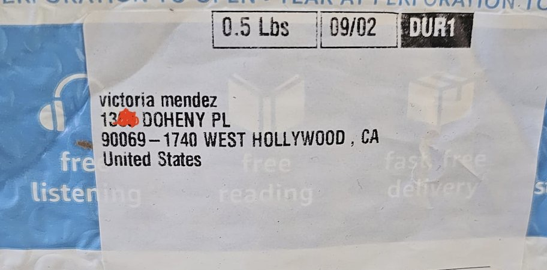
Jennifer Swann at WIRED — a deep read on how D4vd's young fan base is now functioning as a citizen-prosecution research operation. The Discord, the timestamps, the receipts — and what they want next.
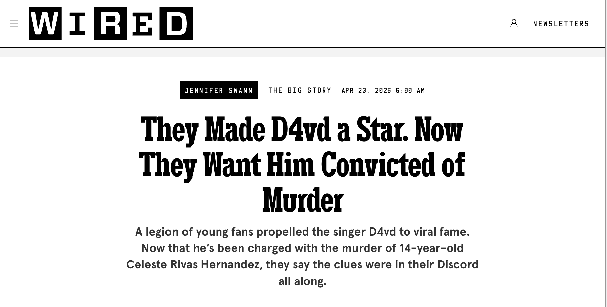
A psychological run-down of the warning signs nobody caught — pulled from the r/d4vdiots community thread that's been doing this work in real time.
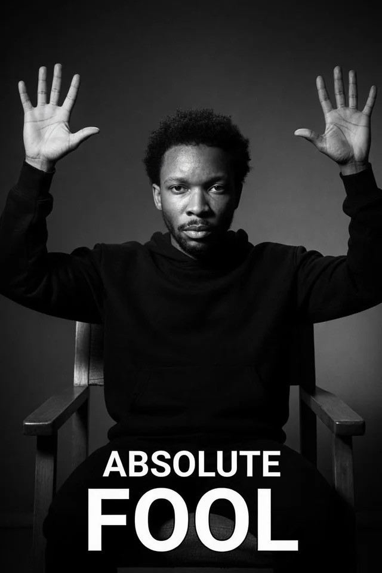
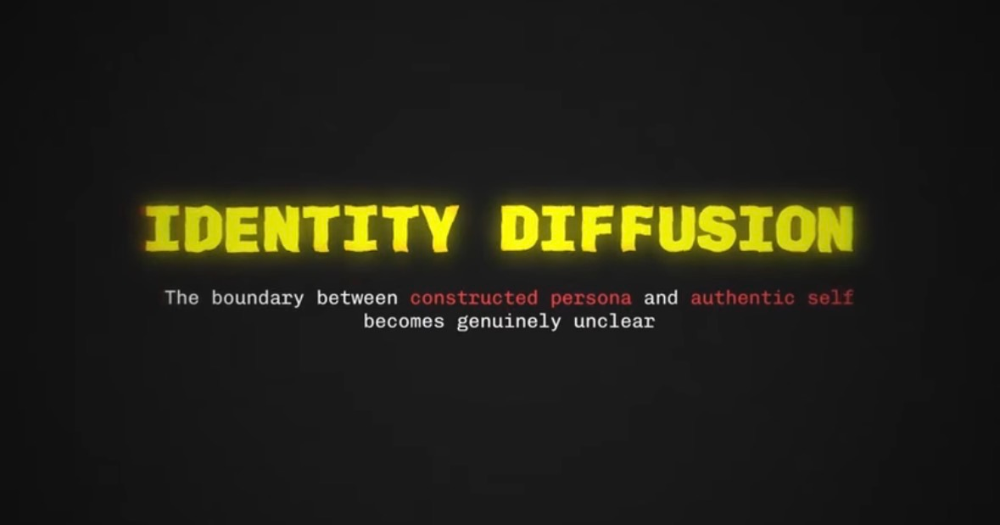
The thread argues David spent years living between constructed identities — none of which were his actual self. Receipts in the visual catalog.
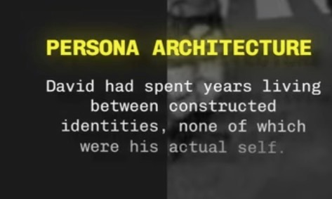
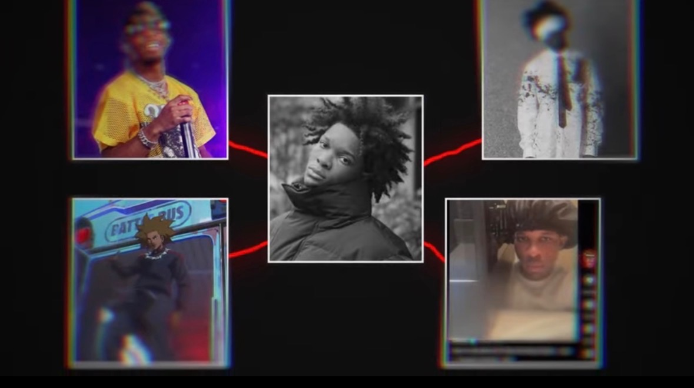
Two questions the courtroom can't litigate but the public will. Both pulled from the r/d4vdiots psych breakdown.
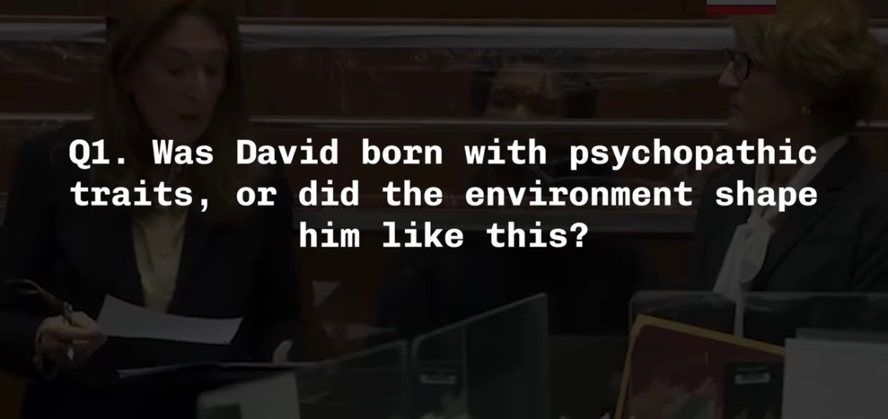
The visual context the psych thread leans on — childhood photos surrounding the booking image, mapping the shift from kid to constructed adult persona.
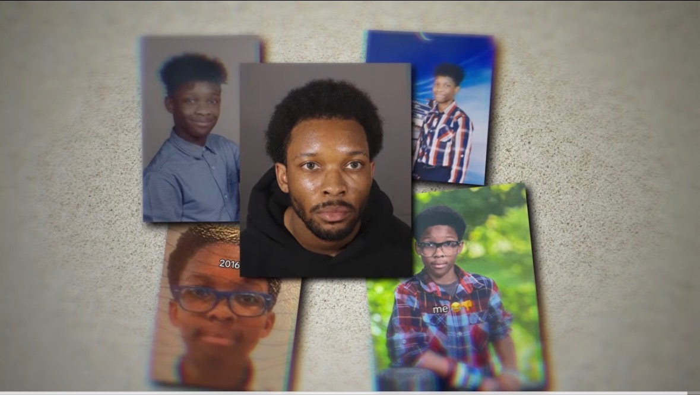
If you're Blair Berk on May 26, you're picking from a small menu. Each door has cost. Each door has reach.
Victoria. Or another close associate. The Casey Anthony approach — “Zanny the Nanny” restaged for 2026. Pin the act on a third party with proximity and motive. Cost: requires plausible alternate suspect with documentary footing.
Lean into the Itami persona and the broader identity-diffusion thread. Mental-illness defense — diminished capacity, not full-blown insanity. High-risk, high-reward. Cost: opens his own internet history wide for the prosecution.
The pure-circumstantial play. Push the gap: degraded forensics, no direct witness, no confession. Cost: doesn't address the Amazon orders, the cell-tower data, the DNA in the garage. The prosecution's "blended case" framing exists specifically to cut this argument off.
Monthly listeners on Spotify have increased since Burke was charged. Tracked by the community since the indictment.
"D4vd's monthly listeners increasing since being [charged]" — community thread documenting the streaming bump.
Open the Reddit thread →Industry Blackout and The 100 Percenters are organizing a peaceful demonstration at the LA offices of Amazon Music · Spotify · Apple Music. May 2026 (date TBD). The platform-pressure play.
Rebel back on the stand for week two of the defamation trial. Plus the courtroom-couture moment nobody was expecting: greens, across the pond.
Five days. Plaintiff's case. Tears, texts, deals, and a meme. Day-by-day breakdown of week one before Wilson took the stand on Tuesday.
Wilson takes the stand · Tuesday Apr 28 → Week 2
Defense case opens. Wilson takes four days of cross-examination from MacInnes's barrister. Justice Elizabeth Raper presiding. Bondi penthouse, hot bath, swimwear, missing WhatsApp — the contested facts get aired.
Closing arguments & verdict watch · this week
MacInnes's silk has been running cross-examination this week and watching her work is its own television. Four days of structured pressure — phone wipes, Snapchat hacks, Bondi swims — methodical, surgical, devastating.
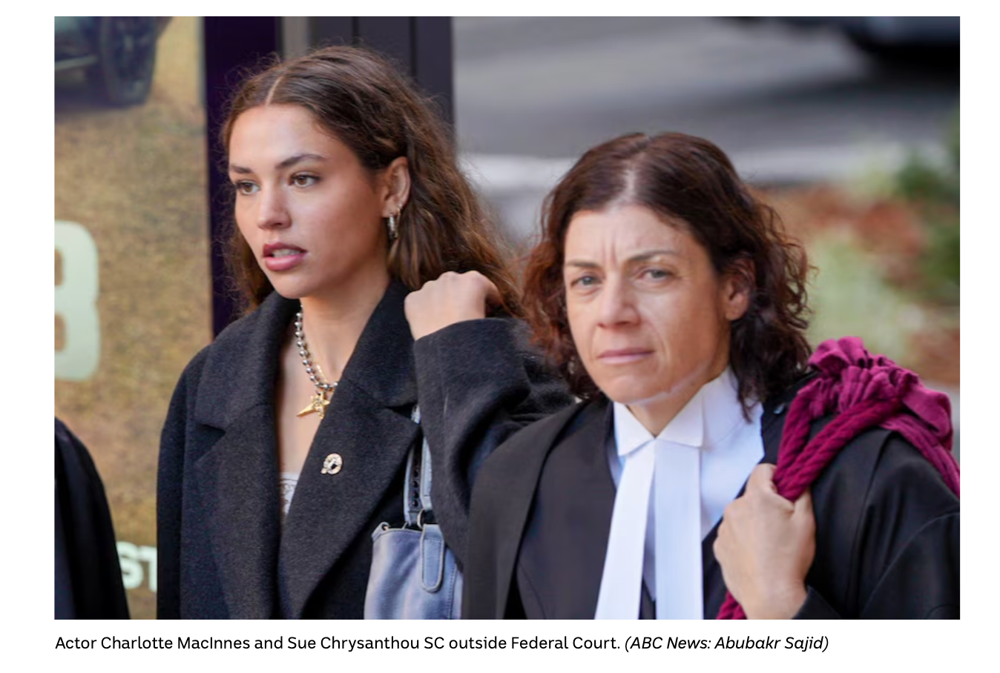
Every call CJ made from the courtroom this week — chronologically. Swipe →
Australian defamation runs on six classic elements. Here's where each one currently sits in the FCA trial — what's met, what's contested, what's the live battle right now.
However the judge resolves this dispute likely decides the truth defense — and the case.
Same colors as the Blake v. Baldoni mediation. Rebel Wilson walked into Federal Court of Australia in a vivid spring-green blazer; producer Amanda Ghost wore olive utility the week before; day two, Rebel switched to a slicked-back ponytail. The 2026 defamation circuit has a palette.


Updates on Britney, Kim, Kanye · new filings on Diggs, Spencer Pratt, Kylie Jenner, 50 Cent. Rapid fire. Scroll down for each card.
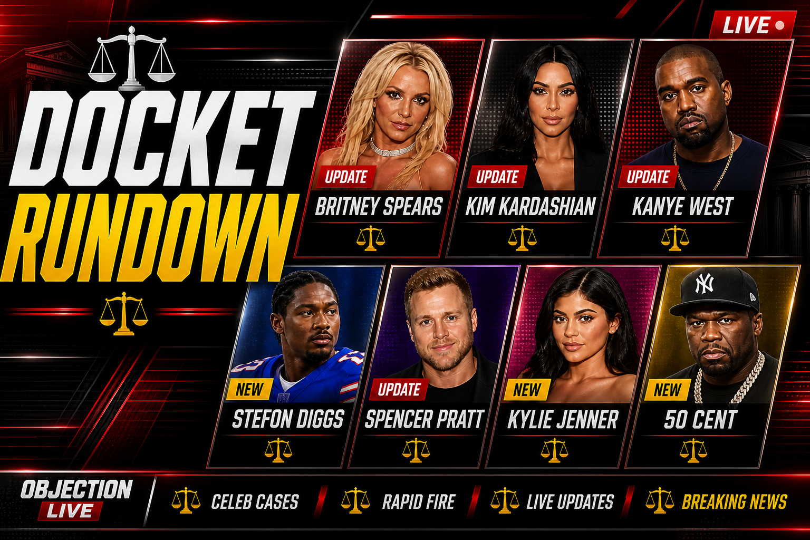
DA Erik Nasarenko filed a one-count misdemeanor complaint Apr 30 — VC 23152(g), a "wet" DUI of alcohol and drug — sworn by declarant Clayton Reagan. Arraignment is happening this morning in Dept. 10 of Ventura County Superior. Britney's in treatment out of state and is not required to appear. Case number 2026006060.
Judge Steven A. Ellis split the case in half. Kim and Kris keep their $7M defamation claims in open court — and now have a trial date. Ray J's breach-of-contract countersuit is going to private arbitration.
Criminal trial begins today. ComeWithFacts has the rundown of what's at stake when proceedings open this morning.
Two tracks at once. The Palisades fire lawsuit just entered full discovery. And he's running for LA mayor — debate in 4 days. Backed by Jeannie Buss, Joe Rogan, and Audrina Patridge.
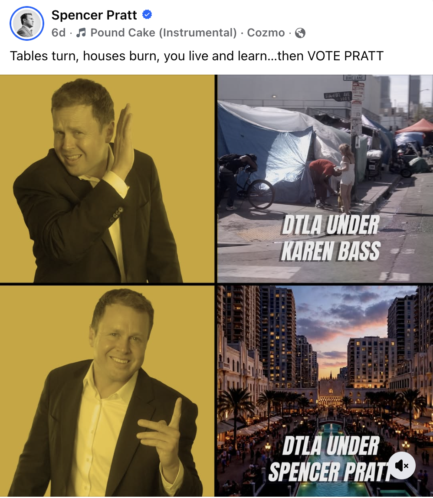
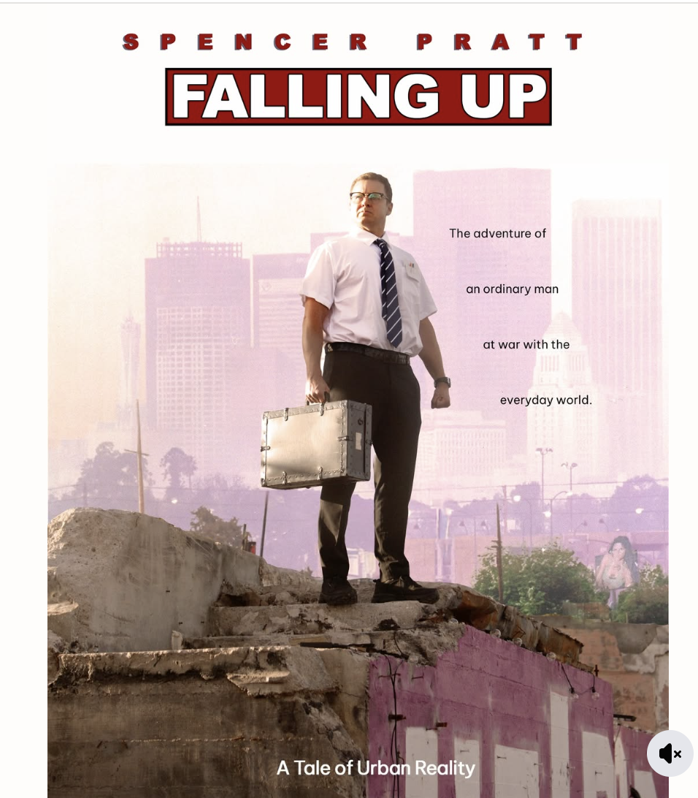
"the freight train of justice" · @SpencerPratt on FB
Latest filings on Curtis Jackson's litigation page. Tracking subpoena fights, witness disclosures, and the running media-strategy thread on the docket page.
@OVODocket surfaced Drake's own framing of the media + campaign strategy in the UMG case. Worth playing back-to-back with the Spotify update on the next slide.
@howstickyitget surfaced the dismissal document on May 1. Capolongo v. Spotify is officially off the active docket. Case page updated.
@KINGJARED300 dropped the master list of 2026 movies. Updating the Recess page with the full year this morning — here's what's actually opening this month while we cover trials.
Erik Davis dropped his early reads on the May slate. Both threads filed in latest news.
Every case. Every filing.
Every verdict.